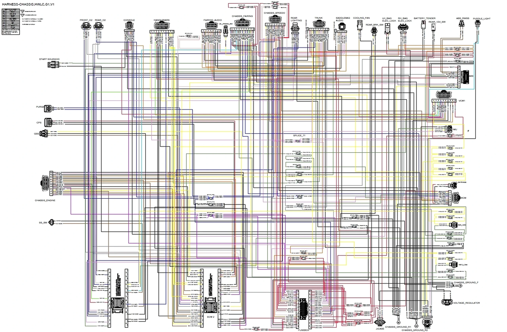
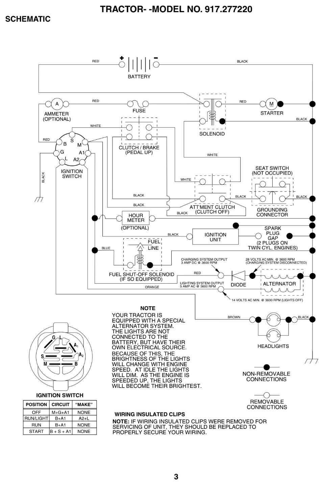

KTM 390 Duke · 2016
Schémas de référence
Légende des composants
Indian Challenger
Faisceau du châssis · HWLC G1 V1

Schéma de référence. Certains numéros de broches sont trop petits dans l’image d’origine pour être confirmés.
Multimètre
— V
Légende des composants · Yamaha YZ450F 2023
A · Faisceau principal B · Faisceau secondaire du CCU

Glisse une pointe ou une pince jusqu’à une borne cerclée. Tu peux aussi cliquer sur l’accessoire, puis sur la borne.
Les lignes en couleur distinguent les alimentations et la masse. Les bornes cerclées sont les points de mesure du simulateur.
| Position | Bornes reliées |
|---|
Référence du plan électrique pour un interrupteur en bon état. En RUN/LIGHT, les groupes B–A1 et A2–L sont isolés l’un de l’autre.
Carnet de diagnostic
Les mesures consignées apparaîtront ici.